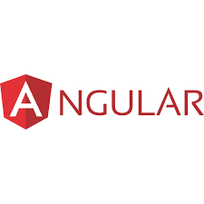

Стабільна версія була перевірена 26 листопада 2024. HTML (англ. HyperText Markup Language — мова розмітки гіпертексту)
— стандартизована мова розмітки документів для перегляду вебсторінок у браузері.
CSS (англ. Cascading Style Sheets, укр. Каскадні таблиці стилів) — це спеціальна мова стилю сторінок, що використовується
для опису їхнього зовнішнього вигляду. Самі ж сторінки написані мовами розмітки даних.
React — це декларативна, ефективна і гнучка JavaScript-бібліотека, призначена для створення інтерфейсів користувача.
Вона дозволяє компонувати складні інтерфейси з невеликих окремих частин коду — “компонентів”.

Angular — фреймворк JavaScript для розробки складних та високонавантажених сайтів та web-систем, а також додатків для iOS та Android, як основа технології Ionic.
Vue (вимовляється як (англ.) /vjuː/, (укр) /в'ю/) — це фреймворк, який працює на JavaScript, створений для розробки користувацьких інтерфейсів. Він працює на базі
звичайного HTML, CSS та JavaScript, з можливостями декларативно програмувати користувацькі інтерфейси будь-якої складності на основі компонентів.